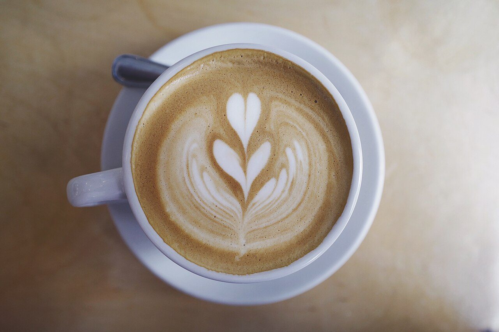
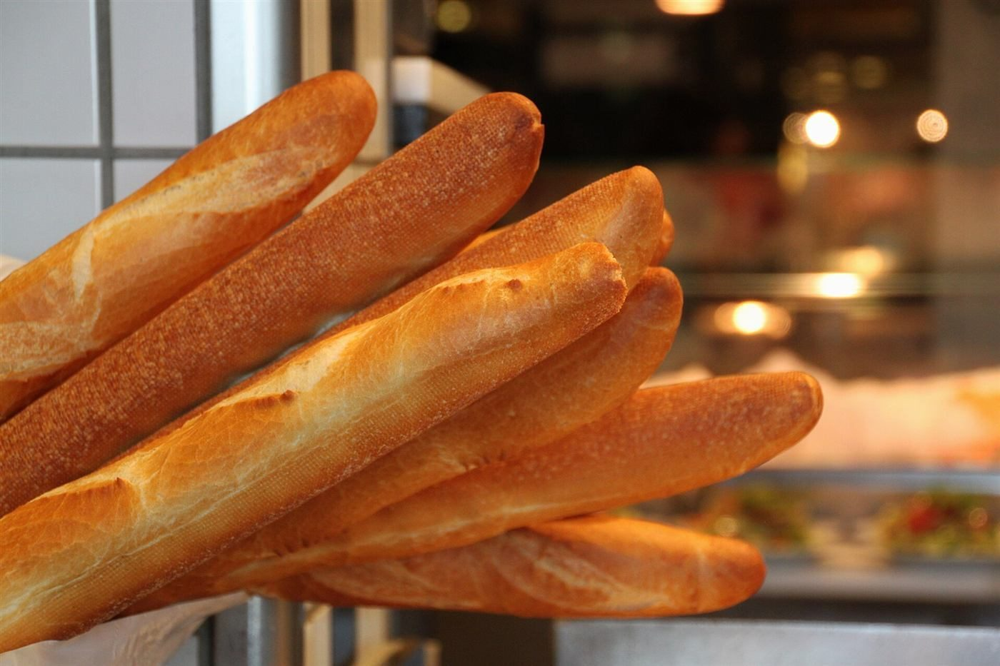

配置図
前から見た姿と、後ろから見た姿
制作側の連想
ドライブレコーダーの部位を、配置図にしてみる
このサイトは、車のガラスに付いている小さなドライブレコーダーを図にしたつもりで作りました。六つの部位に番号をふり、上の図と並べています。制作側の連想で、お店の理念・由来とは無関係です。実際の機器の仕様を示すものでもありません。
凡例
六つの部位
- 1広角レンズ前方を映すための、本体の「目」にあたる部分。
- 2吸盤ブラケット本体をガラスの内側に留める、台座とアーム。
- 3電源ケーブル本体へ電気を送る、細いコード。
- 4microSDスロット録画データを入れるカードの差し込み口。
- 5液晶モニター映像や設定を映す、小さな画面。
- 6操作ボタン設定や録画の操作に使う、小さなボタン。
ギャラリー(イメージ)
パンとコーヒーの写真





写真はパンとコーヒーのイメージです。お店のものではなく、お店で提供している商品を示すものでもありません。
ご案内
お店のこと(確認できたものだけ)
| 所在地 | 〒720-0061 広島県福山市丸之内１丁目８−９ |
|---|---|
| 電話 | 準備中 |
| 営業時間 | 準備中 |
| 定休日 | 準備中 |
| ご予約 | 準備中 |
| 駐車場 | 準備中 |
| SNS | Instagram @fukujuterrace |